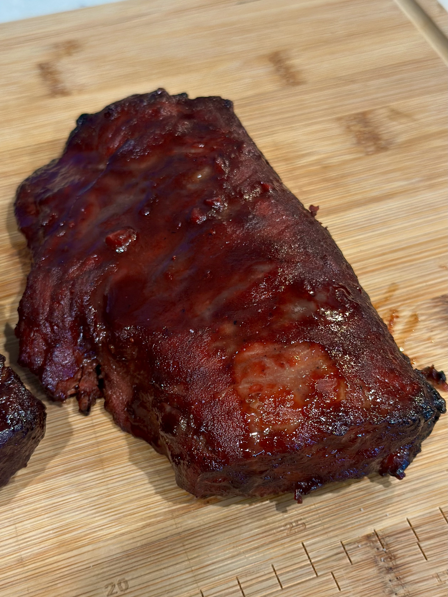
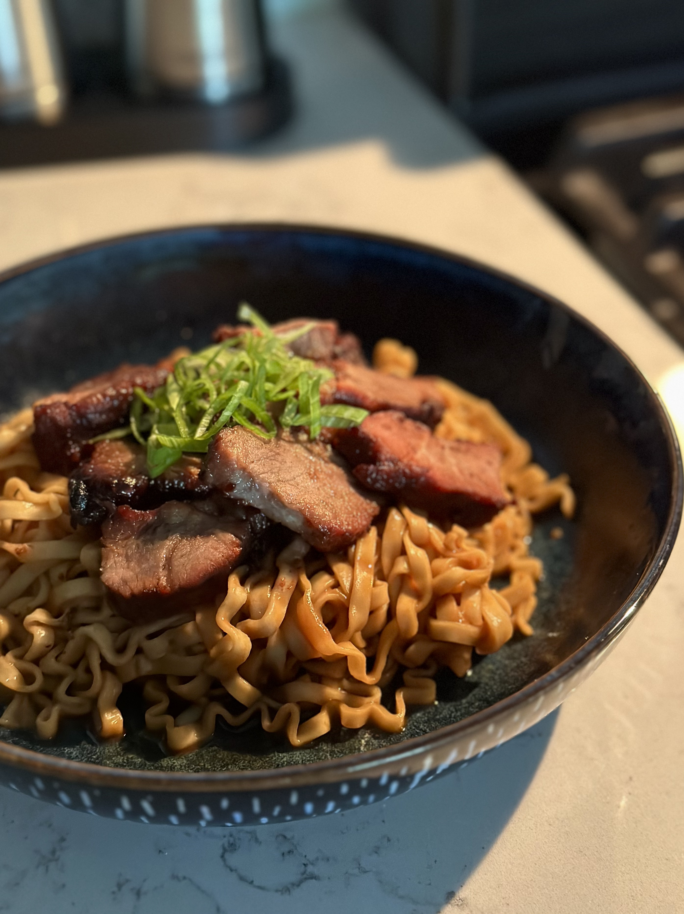
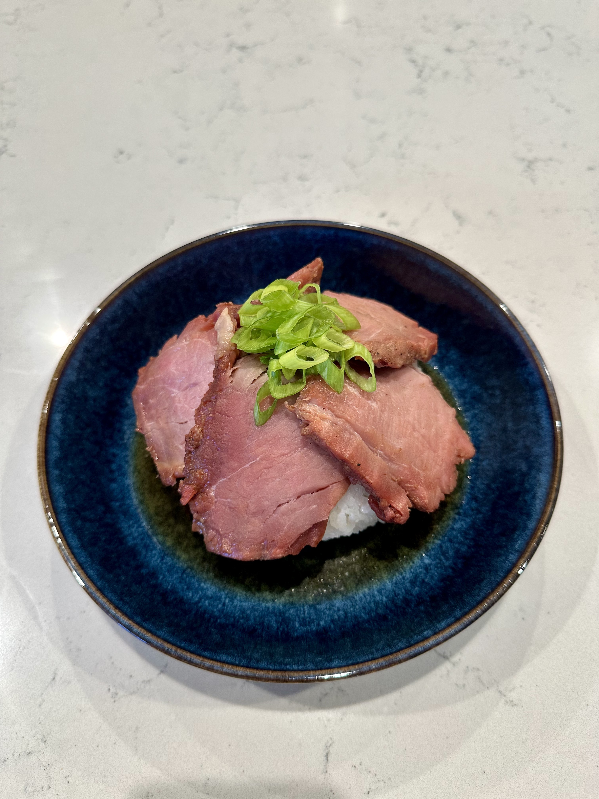
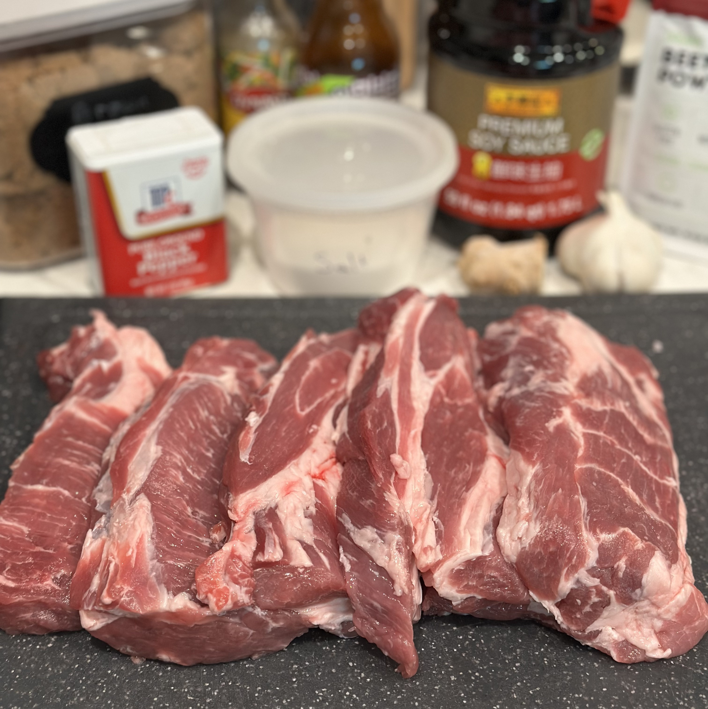
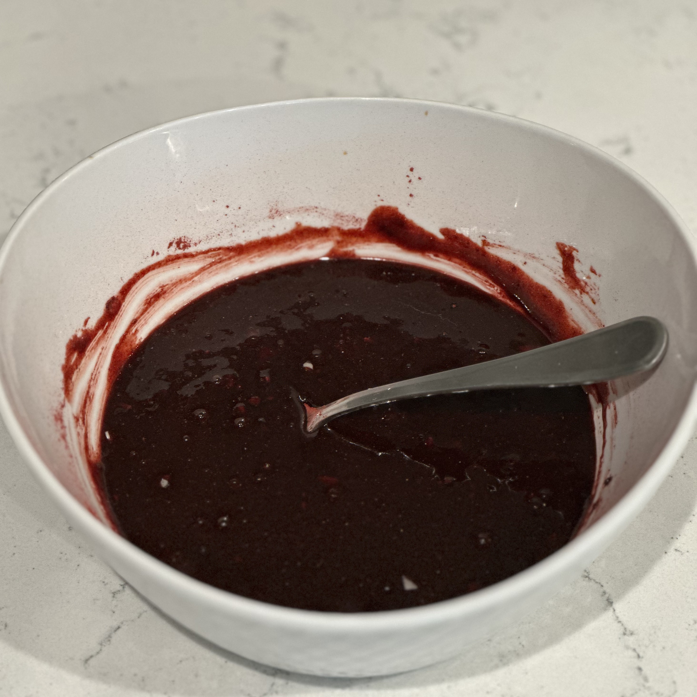
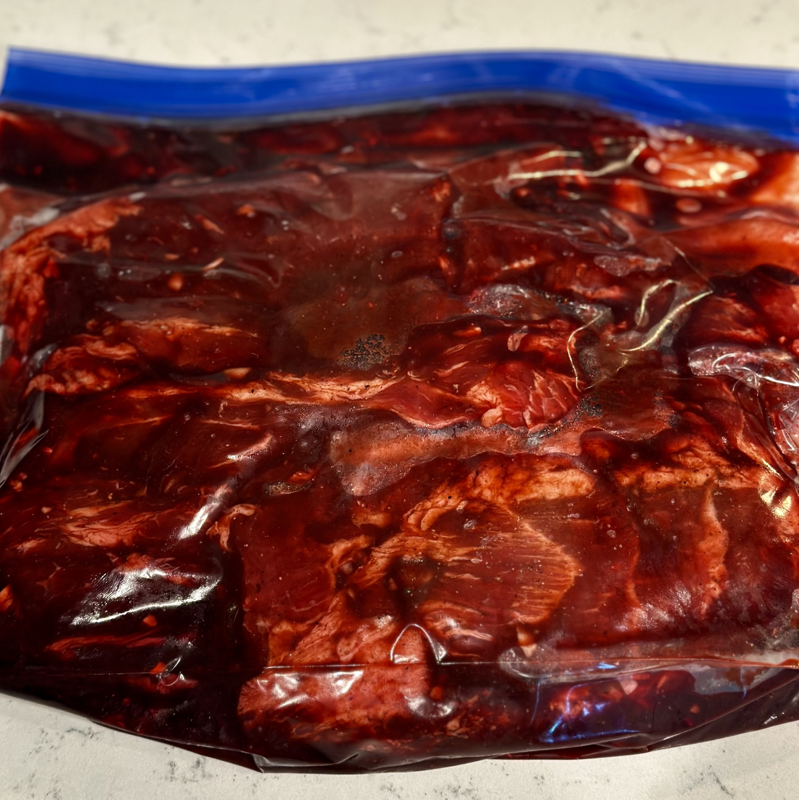
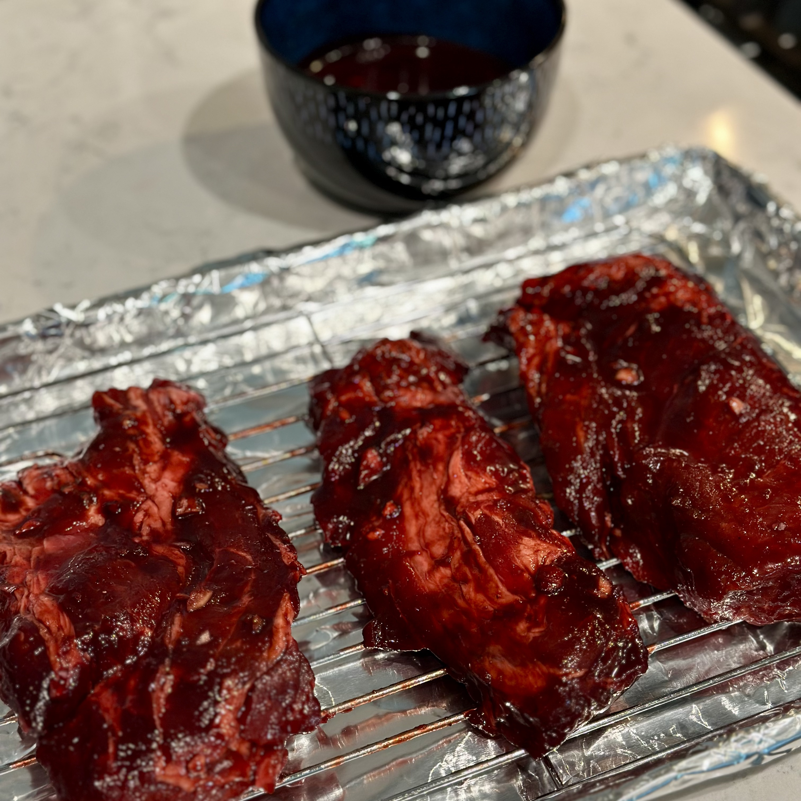
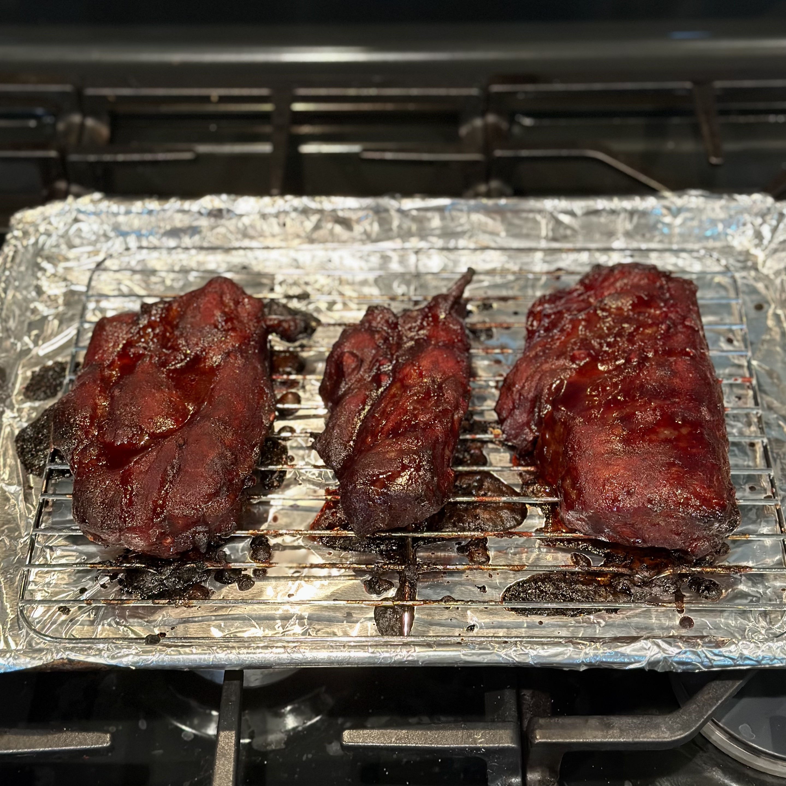
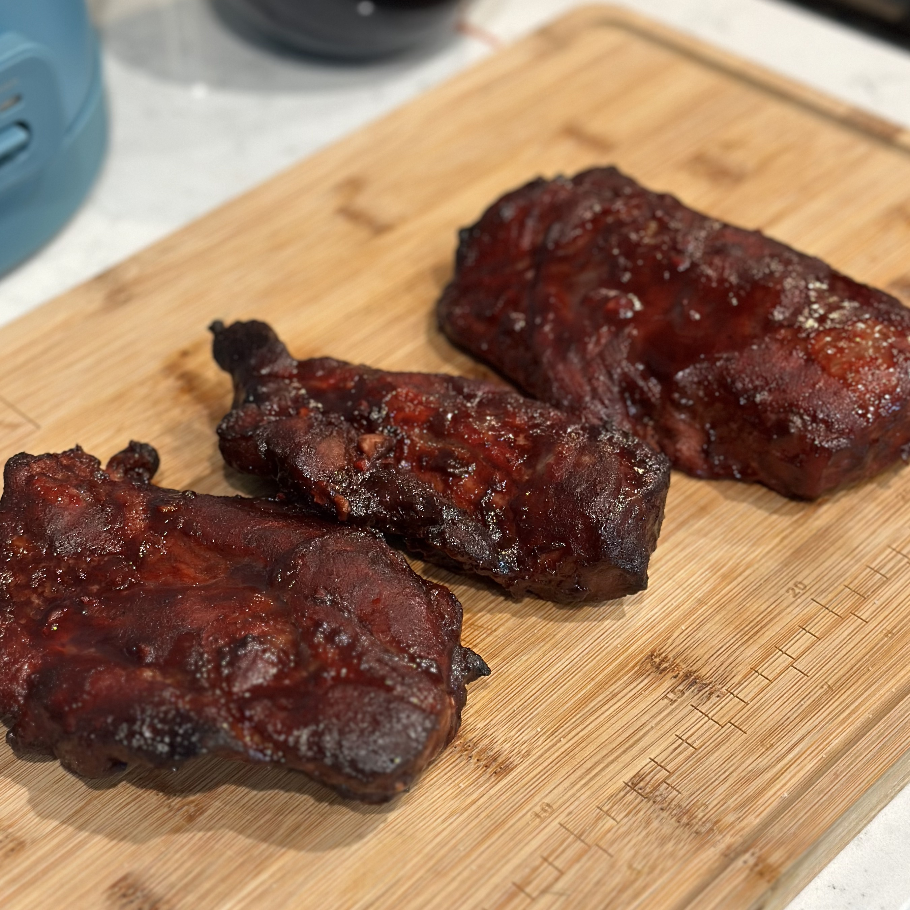

Char siu.

Whole char siu.

Soy, peanut noodles with chopped char siu.

Char siu served over rice.
Overview
What is char siu?
Char siu (叉燒, pronounced "chaw-see-oo") is a type of Cantonese (Chinese) roasted pork originating in southern China, specifically the Guangdong region. Its name translates roughly to "fork roasted," which refers to the traditional cooking technique of skewering strips of seasoned pork on long forks and roasting them over a fire. Char siu is part of a broader Cantonese tradition known as siu mei, meaning "roasted meats," alongside other dishes such as roasted goose and crispy pork.
The pork is typically marinated in a sweet and savory mixture of maltose or honey, soy sauce, hoisin sauce, Chinese five-spice, and seasonings before being roasted and glazed.
Origin and History
The history of char siu can be traced to much older Chinese traditions of roasting meat on skewers. Historical predecessors have been associated with the Zhou dynasty, although the dish has changed considerably over the centuries that have passed since then. The technique eventually became associated with Guangdong cuisine.
Char siu later became an important part of Hong Kong's siu mei culture, where roasted meats are commonly displayed hanging in the windows of specialized restaurants. Cantonese migration and the spread of Cantonese restaurants also introduced char siu to communities throughout Southeast Asia and eventually much of the rest of the world.
Appearance and Flavor
Char siu is known for its glossy exterior, caramelized edges, and distinctive red color. Its marinade creates a combination of sweet, savory, and aromatic flavors, while roasting and glazing caramelize the sugars on the outside of the pork.
The characteristic red exterior can also be produced in several ways. Traditional preparations may use red fermented bean curd, or nam yu, which contributes both color and a distinctive fermented flavor. Its color is connected to red yeast rice, which is produced by fermenting rice with Monascus mold and can itself be used as a natural red colorant. Many modern recipes instead use red food coloring to recreate the bright color. These ingredients are not essential, however, and char siu prepared without them develops a more natural red-brown color as its marinade caramelizes.
Char Siu and Chāshū
As Chinese food spread to other parts of Asia, char siu influenced other dishes that eventually developed their own identities. One of the most recognizable examples is Japanese chāshū (チャーシュー, pronounced "chaw-shoo"), whose name derives from Chinese char siu. Seasoned pork became associated with Japanese Chinese-style noodle dishes and later developed into the familiar ramen topping.
Despite their related names and history, modern char siu and chāshū are quite different. Cantonese char siu is generally made from strips of marinated pork that are roasted until caramelized, while Japanese chāshū is commonly made by braising pork belly or another cut in a soy-based liquid. Chāshū is often rolled before cooking and sliced into thin rounds for serving with ramen. As a result, char siu tends to have a firmer, caramelized exterior and a sweet, roasted flavor, while chāshū is generally softer and characterized by the flavors of its braising liquid.
Recipe
Ingredients
- 3-4 lbs pork shoulder[1]
- 35 g brown sugar
- 1/2 tsp white pepper
- 3 cloves minced garlic
- 1 tsp minced ginger
- 75 g honey
- 65 g hoisin sauce
- 50 g soy sauce
- 1 tsp Chinese five-spice[2]
- 1 tsp sesame oil
- Red food coloring
Directions
- Cut the pork into 2-inch-thick steaks and set aside in a gallon sized bag.
- Thoroughly combine all other ingredients in a bowl until a thick marinade is formed.
- Add the marinade to the bag and mix until the pork is covered completely. Leave to marinate in the fridge for 1-3 days.
- Once the pork is fully marinated, place a wire rack on a baking sheet lined with aluminum foil. Place the pork on the rack and reserve the marinade for basting.
- Bake at 475°F for 10 minutes. Then, reduce the heat to 375°F and cook for 15 more minutes. Flip and continue cooking for another 15 minutes.
- Baste the pork with the reserved marinade, flip it again, then baste the opposite side. Finish cooking for 10 minutes, then remove from the oven and rest for 3-5 minutes. The internal temperature should reach 160-170°F.
Notes
- You can also use 2 pork tenderloins. Cook instead at 350°F for about 25 minutes, basting halfway through. The internal temperature should reach 135-140°F and rise to 145°F after resting.
- If you don't have Chinese five-spice, add about 15 grams extra hoisin sauce, but use only 30 grams of brown sugar.






Uses
- Serve over rice. Slice the char siu and serve it over white rice with sesame oil and green onion. You can also add fresh or cooked vegetables.
- Use as a filling for bao or bolo bao. Dice the pork and fill steamed or baked bao. It can also be tucked into bolo bao, where the sweet topping pairs especially well with the pork.
- Top a bowl of soy, miso, or peanut noodles. Slice thinly and serve over noodles. The sweet and savory pork pairs well with rich or salty sauces.
- Make pork fried rice. Toss leftover rice with chopped char siu on high heat, and stir in an egg, some sliced green onion, and a dash of soy sauce.
- Add to wonton soup or ramen. The sliced pork makes a convenient, prepared topping.
See Also
 Mapo Tofu
Mapo Tofu
References
- Goldthread. “A (Very) Comprehensive Illustrated Guide to Cantonese Barbecue.” Goldthread, 15 Mar. 2019, goldthread2.com/food/comprehensive-cantonese-barbecue-guide/article/3000169. Accessed 16 Aug. 2026.
- Li, Mandy. "The Evolution of Char Siu: A Timeless Delicacy Across Generations." Michelin Guide, 21 Nov. 2024, guide.michelin.com/en/article/features/iconic-dish-char-siu-history-recommendation. Accessed 16 Aug. 2026.
- “How to Make Char Siu at Home.” Epicurious, epicurious.com/expert-advice/how-to-make-char-siu-chinese-bbq-pork. Accessed 18 Aug. 2026.
- “Why Char Siu Is Old Hong Kong's Classic Comfort Food—and How to Make It.” South China Morning Post, scmp.com/magazines/style/leisure/article/3151591/why-char-siu-old-hong-kongs-classic-comfort-food-and-how. Accessed 18 Aug. 2026.